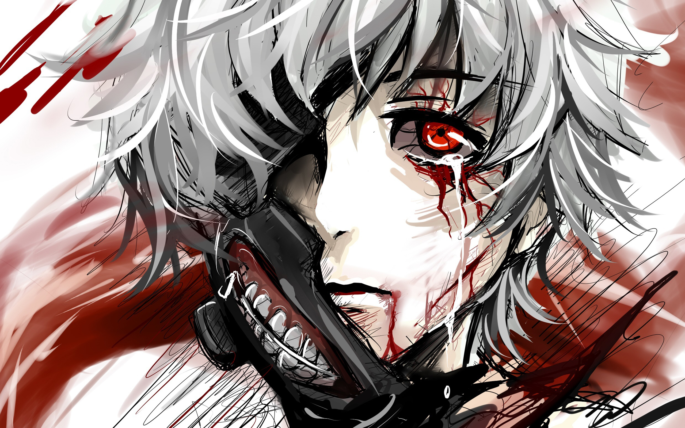

Другие вопросы1000-7 Гуль, гул [1] (араб. غُول [ɣuːl]; англ. Ghoul) — мифическое существо и фольклорный персонаж, оборотень в арабской, персидской и тюркской мифологии. Обычно изображается как существо с отвратительной внешностью и ослиными копытами, которые не исчезают при любых превращениях [2]. В доисламском фольклоре гулы — оборотни, живущие в пустыне вдоль дорог и охотящиеся на путников, которых убивают, а затем пожирают. Также крадут детей, пьют кровь, воруют монеты, грабят могилы и поедают трупы. Постоянно меняют форму, превращаются в животных, в особенности в гиен, или в молодых привлекательных женщин [3]. В исламе гулы считаются одним из подвидов джиннов и порождением иблиса. Согласно сказкам «1000 и 1 ночи» и арабской мифологии, отражённой в них, гулы представляют опасность для живых: они оборачиваются людьми (чаще молодыми женщинами), заманивают путников к себе в логово, расположенное в развалинах, и пожирают его. Спастись от гулов можно силой оружия, ударив лишь единожды (второй удар оживляет оборотня), а увидеть их в истинном виде — воззвав к Аллаху. Согласно сказаниям и легендам Средней Азии, гул не безобиден, живёт в болотах и колодцах, на полях сражений. На последних появляется вместе с воронами. Живых людей боится, избегает. Обладает ужасной внешностью, синеватой мертвецкой склизкой кожей. С XVIII века известны на Западе, в особенности в англоязычной литературе, где в основном описываются как трупоеды и расхитители могил, живущие на кладбищах и близ могильных курганов. Упоминается во многих произведениях, не только Английский и Восточных, но и Европейских. У Европейцев "Гуль" изображается как труп потерявший полностью человеческий облик и живущий в пустых могильника. В описании некоторых бестиариев, упоминается о более сильных тварях "Альгулях" они отличаются силой, нападая на обозы и отбившиеся отряды.  |